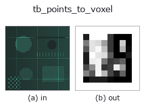

typed op• Data kinds: points → volume
• Call: fullseye.apply(img, "tb_points_to_voxel", a=0.5, b=0.5) (the 2-D model is one image plus two scalar knobs a,b∈[0,1])

*The figure is the actual output on a synthetic 128×128 input. Left: input, right: output. Point clouds are drawn as a top-down scatter (brightness = z), 1-D series as a line plot, volumes as the maximum-intensity projection along z, videos as the middle frame, complex images as magnitude; return values that are not pictures are shown as the values themselves.*
*Knob a does not change the output (measured: identical at 0.1 / 0.5 / 0.9).*
*Knob b does not change the output (measured: identical at 0.1 / 0.5 / 0.9).*
Stages (the ops that come before → this op, left to right):
▸ tb_points_to_voxel: stages (docs site)
On other images (synthetic scene / photo / coins. Top row: inputs, bottom row: their outputs. Knobs at default):
▸ tb_points_to_voxel: other inputs (docs site)
Motion (GIF: frames / views / slices in turn. The still figure is the complete one; the GIF is supplementary):
Point cloud (N,3) → density voxel (size³). Splatted via scatter_add, with optional Gaussian smoothing.
Given bounds=(lo,hi), several clouds can be placed on the same grid (= a precondition for matching).
Procedure: each point is dropped onto the integer grid by idx = floor((p − lo)/(hi − lo)·(size − 1)), and that voxel gets 1 added (value = number of points that fell into that voxel). If smooth > 0, a gaussian with σ=smooth (in voxel units) is applied as a separable conv over 3 axes (radius max(1, int(4σ + 0.5)), edges replicate). The axis order of the output is exactly the column order of the points (points[:, 0] → axis 0); no reordering into (depth,row,col) is done.
• bounds: 2 vectors (lo, hi) with 3 dimensions each. If None, the point cloud's own min/max (the grid changes
per cloud, so always pass the same bounds when comparing 2 clouds). An axis whose length is not 3, non-finite, or with hi <= lo raises ValueError (the tsdf-style ((xmin,xmax),...) convention is rejected as length 2).
• Out-of-range points are not discarded but clipped to the edge voxel (false density piles up at the edges). If you want to cut them off,
remove them on the point-cloud side beforehand.
• size: number of voxels per side. An axis with hi − lo of 0 is merely replaced by 1e-9, without warning.
• With an empty point cloud and bounds=None, numpy's min raises an exception.
• Returns: (size, size, size) float64 numpy (returned to the CPU even if computed on a device). Values are counts
(after smoothing, a weighted distribution of counts) and are not normalised.
Downstream: as input to match_points_ncc / signed_distance_field / voxel_to_mesh.
The 3d op points_to_voxel bridged into the 2-D evolution registry. The implementation is the same; only the calling convention is adapted to op(v, a, b). This op has no tuning points; neither a nor b is used.
• Sample-data catalog (download URLs / licences) — 2-D uses skimage.data (BSD/public domain) plus synthetic images; 3-D lists download URLs for real data sources (Stanford, PDS, …).
• Operator provenance and references — the sources of the research/methods this op family came from.
The program below has been verified to run (same input as the figure). In Studio's help this block becomes buttons that load and run it on the spot.
img_to_points 0.50 0.50 tb_points_to_voxel 0.50 0.50
▸ Load this pipeline · Load & run
The examples below call the underlying ledger op points_to_voxel. This bridge op is the same implementation adapted to the fn(v, a, b) convention, so the behaviour carries over unchanged (only the call form differs).
• sh_descriptor_retrieval — py -3.11 examples_3d/sh_descriptor_retrieval.py
• shape_desc_pose — py -3.11 examples_3d/shape_desc_pose.py
volume as input)identity · vol_gaussian · vol_median · vol_erode · vol_dilate · vol_threshold · vol_reg_dilate · vol_reg_erode
typed)tb_estimate_point_normals · tb_iss_keypoints · tb_project_points · tb_render_point_depth · tb_statistical_outlier_removal · tb_radius_outlier_removal · tb_voxel_grid_downsample · tb_mls_smooth
*Provenance: ops.py — 2D operator registry. This per-op note is generated by tools/opdocs.py md (do not hand-edit).*
© 2026 Kazufumi Furuse — Fullseye operator documentation. Licensed under Apache-2.0.